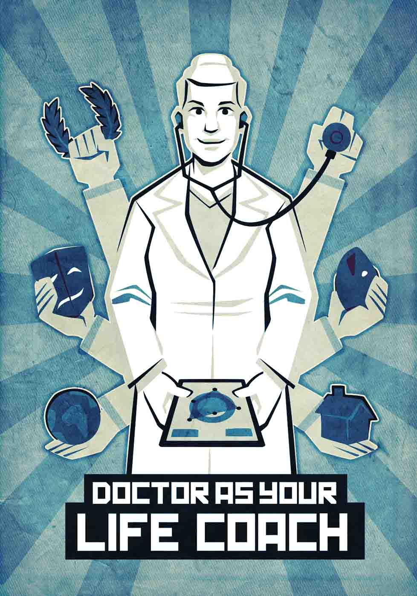

Life issues — employment, housing, food access, and education — can profoundly affect health.
Doctors, nurses, and other health care workers have the potential to be at the nexus of their patients' lives, treating the whole person.
A patient's trust in the doctor is immense. That relationship can be leveraged to provide advice, real help, access to resources, and encouragement on life's diverse challenges.
When your doctor asks you how you are, give a real answer. Share information that will start a conversation about the circumstances of your life.
